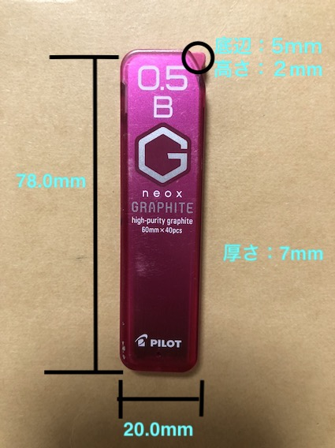
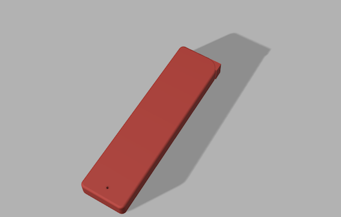
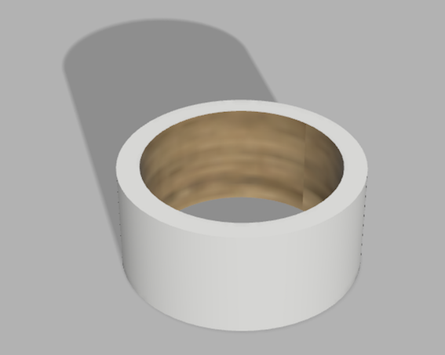

3D CAD
GRAPHITEのシャー芯ケース

〈計測結果〉
【本体】高さ→78.0mm 幅→20.0mm 厚さ→7mm
【三角パーツ】底辺→5mm 高さ→2mm
〈３Dモデル〉

〈製造方法の推測〉
・プラスチックをドロドロに溶かしたものをパーツごとの型に流し込み、 冷やし固めて作った。
〈番外編〉
Masking tape(内径27.4mm 外径33.6mm 芯2.1mm 高さ15.1mm)
